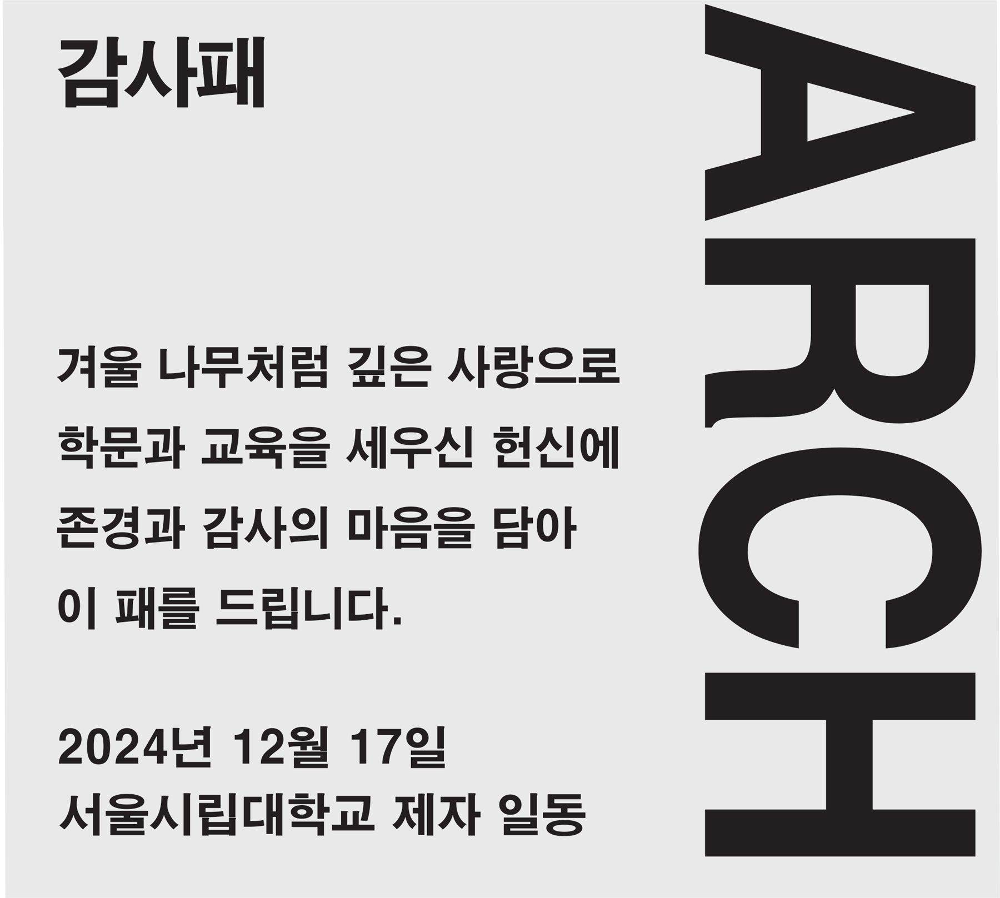
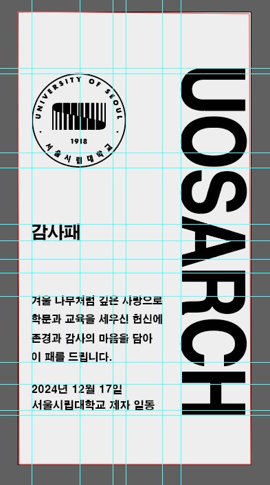

Overview
A plaque of thanks the University of Seoul students gave a professor, dated 17 December 2024. The output is a print-ready drawing: the university seal, a vertical UOSARCH wordmark and a four-line inscription.
- Size
- 93.5 x 182.0 mm artboard
- Date on plaque
- 2024-12-17
- Drawing exported
- 2024-12-15
Problem define
The students needed one object that carried their thanks, the school and the date, read at a glance on a desk.
Solution
A tall panel split in two: a right strip holds UOSARCH set vertically at full height, a left column holds the seal and the inscription. Near-black text (#231F20) on a light grey panel.
| Value with unit | What it measures (10 words or fewer) |
|---|---|
| 86.6 pt | Height of the vertical UOSARCH wordmark type |
| 20 / 16 / 11.76 / 12 pt | Title, name, inscription, date and sender type sizes |
| 37.8 mm square | Seal artwork as a separate file |
Inscription, quoted from 감사패 도안.pdf with the name line replaced:
감사패
[recipient name] 교수님
겨울 나무처럼 깊은 사랑으로
학문과 교육을 세우신 헌신에
존경과 감사의 마음을 담아
이 패를 드립니다.
2024년 12월 17일
서울시립대학교 제자 일동
(In English: "With love as deep as a winter tree, for the devotion that built your scholarship and teaching, we give this plaque with respect and thanks. 17 December 2024, your students at the University of Seoul.")

Process
- Reference. A vendor photo of a lit clear acrylic plaque on a round wooden base is kept in a hidden layer.
감사패 도안.ai, layer - Grid. Column and row guides were set on the 93.5 x 182 mm artboard before placing type.
감사패 도안 그리드.png, layer - Layout. Seal top left, UOSARCH vertical in the right strip, inscription on a shared left margin of 14.5 pt.
감사패 도안.ai, layers로고and - Export. Plaque drawing and seal exported as PDF two days before the date on the plaque.
감사패 도안.pdf,

Lesson
The record holds the drawing only, not the made plaque.